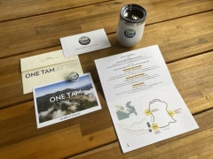
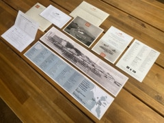
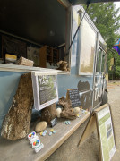
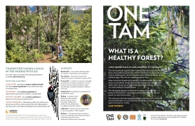
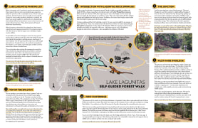
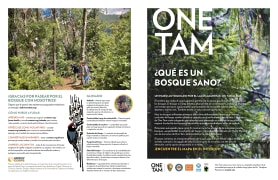
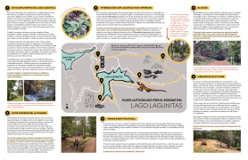

About
Storyteller • Nature lover • Language nerd
Projects
2024
Stinson Beach Coastal Resilience Projects
Collaborated with our Projects team to roll out a multiagency projects factsheet with an accessible color palette (Okabe-Ito) + introduced a single-color logo panel for park partners.2024
Invitations for fund-raising events
We celebrated 10 years of One Tam partnership and 100 years of Crissy Field aviation (Trails Forever Dinner).


2023
Self-guided Forest Walks at One Tam
Piloted a self-guided forest walk at Lake Lagunitas with passionate One Tam storytellers (in English and Spanish). 2024 update: we now have one for Rock Spring!




